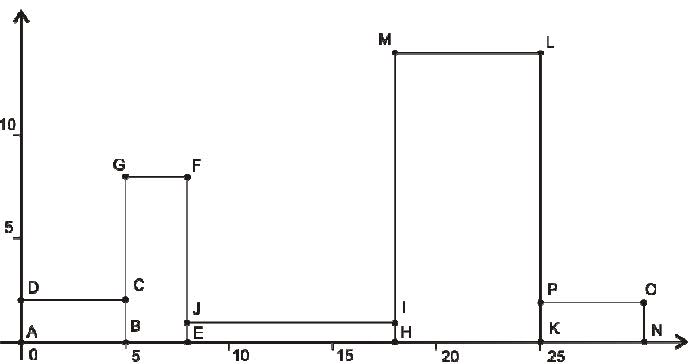

Cho n hình chữ nhật đánh số từ 1 đến n, hình chữ nhật thứ i có chiều dài là ai và chiều rộng là bi. Các hình chữ nhật này được đặt tiếp xúc với trục Ox và nằm kề nhau từ trái qua phải theo thứ tự chỉ số. Mỗi hình chữ nhật có thể tiếp xúc với trục Ox theo cạnh bất kỳ (xem hình). Cần tính độ dài lớn nhất của đường gấp phía trên (xem hình).

Dữ liệu nhập:
- Dòng đầu tiên ghi số hình chữ nhật n. (1 ≤ n ≤ 100)
- Trong n dòng tiếp theo, dòng thứ i ghi hai số ai và bi, độ dài cạnh của hình chữ nhật thứ i. (1 ≤ ai, bi ≤ 1000).
Dữ liệu xuất:
- Là độ dài lớn nhất tìm được.
Giải thích
Cách xếp mà thu được chiều dài lớn nhất là hình trên. Cạnh phía trên gồm các đoạn DC, CG, GF, FJ, JI, IM, ML, LP, và PO.
Độ dài của đoạn này là 5 + 6 + 3 + 7 + 10 + 13 + 7 + 12 + 5 = 68